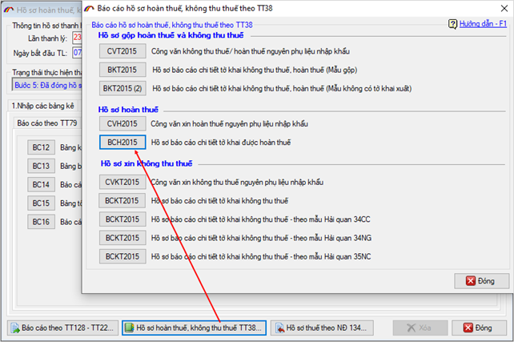
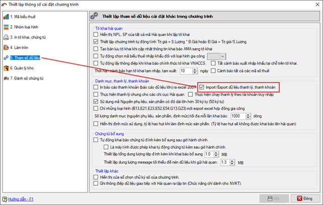
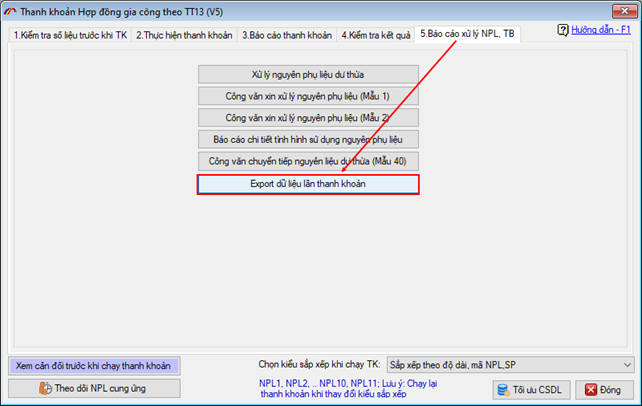
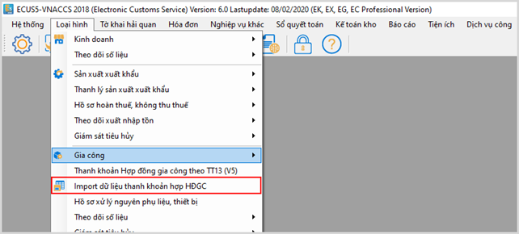
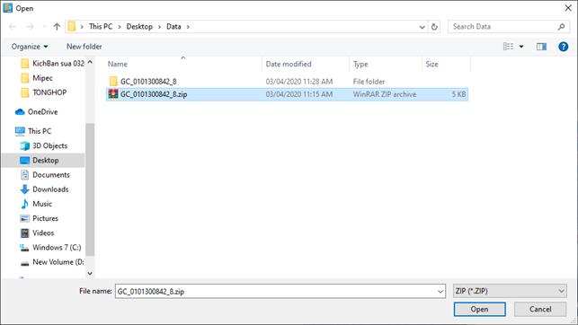
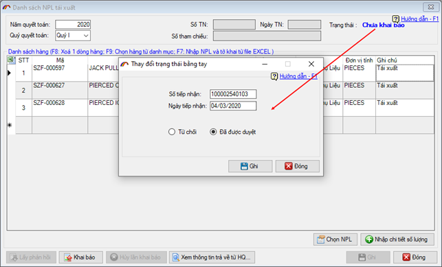
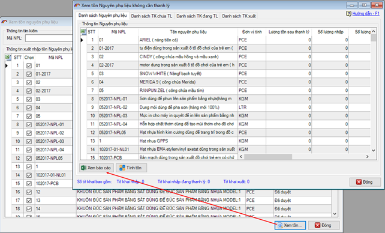

THÔNG TIN THAY ĐỔI TRONG BẢN CẬP NHẬT
(Phiên bản cập nhật ngày 08/02/2020)
Phần mềm ECUS5VNACCS2018 - Ngày phát hành 04/03/2020
Phiên bản cập nhật ngày 08/02/2020 được phát hành ngày 04/03/2020 được bổ sung sửa đổi các chức năng như sau:
1. Nâng cấp in báo cáo 43 chế xuất cho phép in không phụ thuộc vào excel.
2. Sửa chức năng thống kê tờ khai bổ sung AMA (tại menu Báo cáo / Thống kê tờ khai bổ sung AMA)
3. Sửa lỗi báo cáo hồ sơ hoàn thuế không thu thuế thao TT38 / Mẫu BCH2015 - Hồ sơ báo cáo chi tiết tờ khai được hoàn thuế:
- Danh sách lần in không thể hiện.
- Khi in báo cáo thì mẫu báo cáo thể hiện sai.

4. Chức năng cảnh báo mã hàng có chứa ký tự đặc biệt khi nhập mới danh mục.
5. Bổ sung chức năng Export dữ liệu lần thanh khoản gia công
Phần mềm bổ sung chức năng cho phép doanh nghiệp kết xuất dữ liệu lần thanh khoản ra file XML để có thể Import vào xem lại ở một máy tính khác (không kết nối cùng cơ sở dữ liệu).
Để sử dụng chức năng Import / Export lần thanh lý thanh khoản, doanh nghiệp vào menu Hệ thống / Thiết lập thông số chương trình và đánh dấu chọn như hình sau:

Doanh nghiệp thực hiện export dữ liệu thanh khoản bằng cách vào tab 5. Báo cáo xử ly NPL, TB:

Khi export thành công, doanh nghiệp copy thư mục dữ liệu đem sang máy tính ở nơi khác để import vào tại menu Loại hình / Import dữ liệu thanh khoản HĐGC:

Tìm và chọn đến file zip dữ liệu mà bạn đã export ở trên:

6. Nâng cấp chức năng khai báo tái xuất của doanh nghiệp chế xuất.
Chức năng khai báo tái xuất nguyên phụ liệu của doanh nghiệp chế xuất tại menu Loại hình / Thanh lý chế xuất / Khai báo tái xuất NPL đã được nâng cấp cho phép chuyển trạng thái bằng tay để đưa vào thanh lý.

7. Sửa hiện thị số liệu khi xem tồn chế xuất
Sửa chức năng xem tồn không cần thanh lý tại menu Loại hình / Theo dõi xuất nhập tồn chế xuất / Theo dõi xuất nhập tồn NPL không cần thanh lý, hiển thị đầy đủ và chính xác dữ liệu.

Bản quyền © thuộc về Công ty TNHH Phát triển công nghệ Thái Sơn